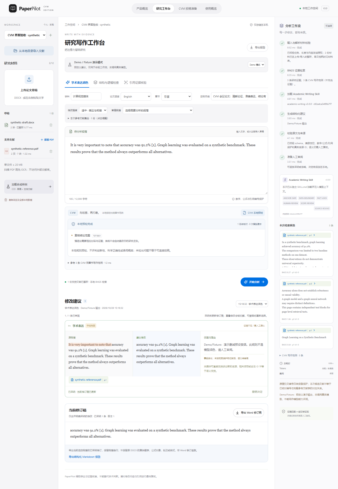

01 RESEARCH WRITING让研究表达，
查看完整案例 ↗
PaperPilot
CVM Edition 3.0让研究表达，
有据可循。
把写作范例与研究证据分开，让修改可核查、可审阅、可撤销。
23篇范例论文
2,076个可定位正文块
0.988合成预检 F1

可运行的个人项目 · 以下交互使用预设样例，实际评测另附来源
先识别需要被完成的任务，再决定 AI 如何参与。
每一个项目，都同时呈现方案、体验和结果。
把写作范例与研究证据分开，让修改可核查、可审阅、可撤销。

把网络指标转成可排查的事件，用混合检索和 Workflow 组织诊断依据。

体验一次修改审阅，或一次告警处置。
所有演示在浏览器内完成，无需登录。
产品经理的判断，体现在能力边界、
用户控制权和如何解释一个数字。
自建中英文开发题集，目标论文与方法章节同时匹配。原始 BM25 为 19/46。
了解题集与对照条件 ↗108 条范围内冻结测试，按文档级 Top-5 去重计算。
探索四种检索策略 ↗11/108 条范围内查询被拒答。把漏答成本也纳入下一步迭代。
了解取舍与后续计划 ↗指标来自已执行的本地实验与自建样例，每项结果附有样本和测量方法。
从场景到方案，从实现到验证
围绕具体任务定义输入、输出与人工决策点，把复杂能力组织成易理解、可操作、可复核的产品流程。
两个项目覆盖场景拆解、交互流程、RAG 方案、指标设计与版本迭代，工程实现与验证采用 AI 编码工具协作。